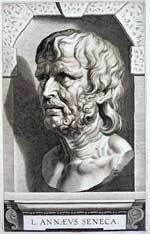

Justus Lipsius 1606 – 2006
Samenstelling: Jeanine de Landtsheer en A.Th. Bouwman
De webpresentatie behandelt de volgende onderwerpen:
6. Lipsius en de klassieke filologie: Seneca
Ook met Seneca heeft Lipsius zich langdurig bezig gehouden, maar een editie met commentaar van diens filosofische werken publiceerde hij pas enkele maanden voor zijn dood (1605). Zij is het resultaat van een grondige vertrouwdheid met de antieke, vooral Stoïcijnse filosofie, die hij ook in zijn eigen leven trachtte toe te passen. Was Tacitus voor Lipsus een voorbeeld van prudentia (d.w.z. het politiek inzicht onontbeerlijk voor een goede vorst), dan stond Seneca model voor de sapientia, de morele kwaliteiten die de filosofie bijbrengt en die noodzakelijk zijn voor elke goede burger. Lipsius leefde in een door godsdiensttwisten verscheurd Europa. Hij had gewoond en gewerkt in het lutherse Jena en protestantse Leiden maar was katholiek gebleven. De Seneca-editie, zijn laatste grote werk, droeg hij op aan de pas gekozen paus Paulus V.
|
6.1 || L. Annaeus Seneca, Epistolae; de Clementia. Publius Syrus,
Sententiae XXII. Ps.-Seneca, De remediia fortuitorum ad
Gallionem. Engeland? s. XII. Manuscript. [Lips. 49]. –– Lipsius bezat diverse middeleeuwse Seneca-handschriften. Als rechtgeaard filoloog had hij grote belangstelling voor oude varianten, die hij kon gebruiken bij zijn tekstkritische activiteiten. |
|
6.2 || J. Lipsius, Animadversiones in tragoedias quae L. Annaeo Senecae tribuuntur. Leiden: F. Raphelengius, 1588. [759 F 20: 3]. –– Lipsius hielp zijn leerling Franciscus Raphelengius jr. (1568-1643) met het uitgeven van Seneca’s dramatisch werk. Als nevenproduct hiervan ontstond Lipsius’ commentaar op de tragedies van Seneca, gepresenteerd als een brief gericht aan zijn jonge vriend. |
|
|
6.3 || L. Annaei Senecae philosophi opera quae exstant omnia.Antwerpen: B. Moretus, 1652. [2668 A 11]. –– Postume editie met emendaties en aantekeningen van Lipsius. De titelgravure, vervaardigd door Cornelis Galle naar een ontwerp van zijn oudere broer Theodoor en verbeterd door Rubens, toont onder meer een portretbuste van Seneca (linksonder). |
|
6.4 || C. Galle (1615-1678), Seneca in bad. Gravure naar Rubens. [PK-P-108.016]. –– Beschuldigd van deelname aan een samenzwering tegen keizer Nero werd de filosoof en staatsman Lucius Annaeus Seneca in 65 na Chr. tot zelfmoord gedwongen. |
|
|  | |
| vorige pagina | volgende pagina |